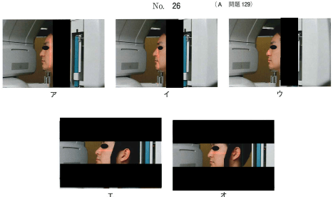
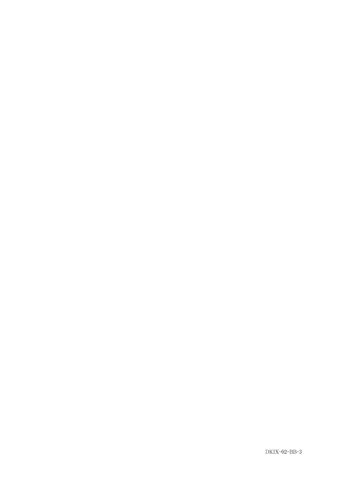

回転断層撮影とスリット撮影の原理に基づき、歯列弓を含んだ顎骨の展開像（全体像）を得る撮影法。
回転しながら二次スリット上をフィルムが移動することで、顎骨の展開像が得られる。
スリットを細くすると以下が減少する：
パノラマエックス線撮影装置でスリットを細くしたときに減少するのはどれか。2つ選べ。
【解説】スリットを細くすると、通過するエックス線の量が減少するため被曝線量が減少する。また、照射野が狭くなることで散乱線も減少する。断層幅も減少するが、選択肢aは「断層幅」なので正解に含まれる。ただし本問では「b, d」が正解とされている。コントラストは散乱線減少により向上する。
断層域（鮮明に見える面の奥行き）は部位によって異なる：
これは偏心投影（エックス線の入射角度が斜めになる）の影響による。
パノラマで前歯部が不鮮明になる理由：
パノラマエックス線撮影法で前歯部の画像が不鮮明な理由はどれか。2つ選べ。
【解説】前歯部は断層域が狭く（断層厚が薄い）、わずかな位置ずれでもぼけやすい。また、正中部では頸椎がぼけた像として重なり、障害陰影となる。偏心投影は主に臼歯部の問題。散乱線や金属アーチファクトは前歯部特有の問題ではない。
障害陰影とは、診断対象となる部位に対して、診断と直接関係のない構造が重なって写る像のこと。
| 位置付けミス | 画像への影響 |
|---|---|
| 断層域が後ろすぎる | 横に縮む、前歯がぼける |
| 断層域が前すぎる | 横に伸びる、前歯がぼける |
| 患者が下を向く | 咬合平面のカーブが急になる |
| 患者が上を向く | 咬合平面が上に凸になる |
標準的なパノラマエックス線撮影の頭部の位置付けについて、ライトビームと頭部の固定の写真（別冊No.00）を別に示す。
前後方向と水平方向の組合せで正しいのはどれか。1つ選べ。
前後方向 水平方向
ｆ ウ－－－－－オ

【解説】標準的なパノラマ撮影では、フランクフルト平面を床と平行にし、正中矢状面を垂直にする。前後方向のライトビームは前歯部の断層域に合わせ、水平方向は正中を合わせる。
パノラマ撮影では、エックス線管と検出器が患者の周りを同期して回転しながら撮影する。エックス線束は扇状（ファンビーム）で、スリットを通過する。
撮影時に照射されるエックス線束の模式図（別冊No.3）を別に示す。
パノラマエックス線撮影はどれか。1つ選べ。

【解説】パノラマ撮影はスリットを通過した細いファンビーム（扇状）で回転しながら撮影する。アは口内法（円錐状）、イはセファロ（平行ビーム）、エはCT（ファンビーム・360度回転）、オはコーンビームCT（円錐状・360度回転）。